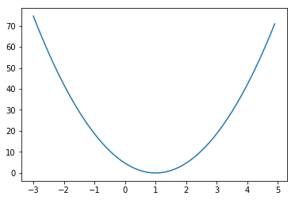
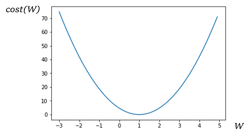

Simplified hypothesis
cost가 최소화되는 w를 찾는 과정
minimizing_cost_show_graph.py
# Lab 3 Minimizing Cost
import tensorflow as tf
import matplotlib.pyplot as plt
tf.set_random_seed(777) # for reproducibility
X = [1, 2, 3]
Y = [1, 2, 3]
W = tf.placeholder(tf.float32)
# Our hypothesis for linear model X * W
hypothesis = X * W
# cost/loss function
cost = tf.reduce_mean(tf.square(hypothesis - Y))
# Launch the graph in a session.
sess = tf.Session()
# Variables for plotting cost function
W_history = []
cost_history = []
for i in range(-30, 50):
curr_W = i * 0.1
curr_cost = sess.run(cost, feed_dict={W: curr_W})
W_history.append(curr_W)
cost_history.append(curr_cost)
# Show the cost function
plt.plot(W_history, cost_history)
plt.show() 결과 창
Gradient descent
 에 대하여
순간 기울기 ( )가 증가함에 따라 W (weight)는 감소하는 방향으로 이동하고, 순간 기울기가 감소함에 따라 W 는 증가하는 방향으로 이동한다.
minimizing_cost_gradient_update.py
# Lab 3 Minimizing Cost
import tensorflow as tf
tf.set_random_seed(777) # for reproducibility
x_data = [1, 2, 3]
y_data = [1, 2, 3]
# Try to find values for W and b to compute y_data = W * x_data + b
# We know that W should be 1 and b should be 0
# But let's use TensorFlow to figure it out
W = tf.Variable(tf.random_normal([1]), name='weight')
X = tf.placeholder(tf.float32)
Y = tf.placeholder(tf.float32)
# Our hypothesis for linear model X * W
hypothesis = X * W
# cost/loss function
cost = tf.reduce_mean(tf.square(hypothesis - Y))
# Minimize: Gradient Descent using derivative: W -= learning_rate * derivative
learning_rate = 0.1
gradient = tf.reduce_mean((W * X - Y) * X)
descent = W - learning_rate * gradient
update = W.assign(descent)
# Launch the graph in a session.
sess = tf.Session()
# Initializes global variables in the graph.
sess.run(tf.global_variables_initializer())
for step in range(21):
sess.run(update, feed_dict={X: x_data, Y: y_data})
print(step, sess.run(cost, feed_dict={X: x_data, Y: y_data}), sess.run(W))결과 창
# result
0 2.1790736 [0.31666672]
1 0.6198253 [0.6355556]
2 0.17630588 [0.8056297]
3 0.050149202 [0.89633584]
4 0.014264651 [0.94471246]
5 0.004057513 [0.9705133]
6 0.0011541372 [0.98427373]
7 0.00032828716 [0.9916127]
8 9.338116e-05 [0.99552673]
9 2.6561995e-05 [0.99761426]
10 7.5549565e-06 [0.9987276]
11 2.1490644e-06 [0.9993214]
12 6.112664e-07 [0.9996381]
13 1.7378237e-07 [0.999807]
14 4.9436064e-08 [0.99989706]
15 1.4069813e-08 [0.9999451]
16 3.993474e-09 [0.99997073]
17 1.1343531e-09 [0.9999844]
18 3.2495487e-10 [0.99999166]
19 9.2727014e-11 [0.9999955]
20 2.6526928e-11 [0.9999976]P.S. 여기서 # Minimize 부분을 tensorflow가 제공해주는 method로 간략화 시킬 수 있다.
# Minimize: Gradient Descent using derivative: W -= learning_rate * derivative
learning_rate = 0.1
gradient = tf.reduce_mean((W * X - Y) * X)
descent = W - learning_rate * gradient
update = W.assign(descent)=
# Minimize: Gradient Descent Magic
optimizer = tf.train.GradientDescentOptimizer(learning_rate=0.1)
train = optimizer.minimize(cost)미분을 할 필요가 없어져서 매우 편리하다.
minimizing_cost_tf_optimizier.py
# Lab 3 Minimizing Cost
import tensorflow as tf
tf.set_random_seed(777) # for reproducibility
# tf Graph Input
X = [1, 2, 3]
Y = [1, 2, 3]
# Set wrong model weights
W = tf.Variable(5.0)
# Linear model
hypothesis = X * W
# cost/loss function
cost = tf.reduce_mean(tf.square(hypothesis - Y))
# Minimize: Gradient Descent Magic
optimizer = tf.train.GradientDescentOptimizer(learning_rate=0.1)
train = optimizer.minimize(cost)
# Launch the graph in a session.
sess = tf.Session()
# Initializes global variables in the graph.
sess.run(tf.global_variables_initializer())
for step in range(100):
print(step, sess.run(W))
sess.run(train)
결과 창
# result
0 5.0
1 1.2666664
2 1.0177778
3 1.0011852
4 1.000079
5 1.0000052
6 1.0000004
7 1.0
8 1.0
9 1.0
10 1.0
11 1.0
...W 가 step 7부터 1로 수렴하는 것을 볼 수 있다.
minimizing_cost_tf_gradient.py
# Lab 3 Minimizing Cost
# This is optional :
# 1) compute_gradient
# 2) and apply_gradient
import tensorflow as tf
tf.set_random_seed(777) # for reproducibility
# tf Graph Input
X = [1, 2, 3]
Y = [1, 2, 3]
# Set wrong model weights
W = tf.Variable(5.)
# Linear model
hypothesis = X * W
# Manual gradient
gradient = tf.reduce_mean((W * X - Y) * X) * 2
# cost/loss function
cost = tf.reduce_mean(tf.square(hypothesis - Y))
# Minimize: Gradient Descent Magic
optimizer = tf.train.GradientDescentOptimizer(learning_rate=0.01)
train = optimizer.minimize(cost)
# Get gradients
gvs = optimizer.compute_gradients(cost, [W])
# Optional: modify gradient if necessary
# gvs = [(tf.clip_by_value(grad, -1., 1.), var) for grad, var in gvs]
# Apply gradients
apply_gradients = optimizer.apply_gradients(gvs)
# Launch the graph in a session.
sess = tf.Session()
# Initializes global variables in the graph.
sess.run(tf.global_variables_initializer())
for step in range(100):
print(step, sess.run([gradient, W, gvs]))
sess.run(apply_gradients) # Same as sess.run(train)결과 창
step / 수식으로 계산한 gradient / W / optimizer에 의해 계산된 gradient / optimizer에 의해 계산된 W
# result
0 [37.333332, 5.0, [(37.333336, 5.0)]]
1 [33.84889, 4.6266665, [(33.84889, 4.6266665)]]
2 [30.689657, 4.2881775, [(30.689657, 4.2881775)]]
3 [27.825289, 3.981281, [(27.825289, 3.981281)]]
4 [25.228264, 3.7030282, [(25.228264, 3.7030282)]]
5 [22.873625, 3.4507456, [(22.873627, 3.4507456)]]
6 [20.738754, 3.2220094, [(20.738754, 3.2220094)]]
7 [18.803139, 3.014622, [(18.80314, 3.014622)]]
8 [17.04818, 2.8265905, [(17.04818, 2.8265905)]]
9 [15.457016, 2.6561089, [(15.457016, 2.6561089)]]
10 [14.014362, 2.5015388, [(14.014362, 2.5015388)]]
11 [12.706355, 2.3613951, [(12.706355, 2.3613951)]]
12 [11.520428, 2.2343316, [(11.520429, 2.2343316)]]
13 [10.445188, 2.1191273, [(10.4451885, 2.1191273)]]
14 [9.470304, 2.0146754, [(9.4703045, 2.0146754)]]
15 [8.586408, 1.9199723, [(8.586408, 1.9199723)]]
16 [7.78501, 1.8341082, [(7.7850103, 1.8341082)]]
17 [7.058409, 1.7562581, [(7.0584097, 1.7562581)]]
18 [6.3996243, 1.6856741, [(6.399625, 1.6856741)]]
19 [5.8023267, 1.6216779, [(5.802327, 1.6216779)]]
20 [5.2607765, 1.5636547, [(5.2607765, 1.5636547)]]
21 [4.769771, 1.5110469, [(4.769771, 1.5110469)]]
22 [4.3245926, 1.4633492, [(4.3245926, 1.4633492)]]
23 [3.9209645, 1.4201033, [(3.9209647, 1.4201033)]]
24 [3.555008, 1.3808937, [(3.555008, 1.3808937)]]
25 [3.2232068, 1.3453436, [(3.223207, 1.3453436)]]
26 [2.9223745, 1.3131115, [(2.9223745, 1.3131115)]]
27 [2.6496189, 1.2838877, [(2.6496186, 1.2838877)]]
28 [2.4023216, 1.2573916, [(2.4023218, 1.2573916)]]
29 [2.178105, 1.2333684, [(2.178105, 1.2333684)]]
30 [1.9748148, 1.2115873, [(1.9748147, 1.2115873)]]
31 [1.7904993, 1.1918392, [(1.7904994, 1.1918392)]]
32 [1.623386, 1.1739342, [(1.6233861, 1.1739342)]]
33 [1.4718704, 1.1577004, [(1.4718704, 1.1577004)]]
34 [1.3344965, 1.1429818, [(1.3344965, 1.1429818)]]
35 [1.2099432, 1.1296368, [(1.2099432, 1.1296368)]]
36 [1.0970153, 1.1175374, [(1.0970154, 1.1175374)]]
37 [0.99462754, 1.1065673, [(0.9946276, 1.1065673)]]
38 [0.90179634, 1.096621, [(0.90179634, 1.096621)]]
39 [0.81762886, 1.0876031, [(0.81762886, 1.0876031)]]
40 [0.7413165, 1.0794268, [(0.7413165, 1.0794268)]]
41 [0.67212707, 1.0720136, [(0.6721271, 1.0720136)]]
42 [0.6093953, 1.0652924, [(0.6093954, 1.0652924)]]
43 [0.5525182, 1.0591984, [(0.55251825, 1.0591984)]]
44 [0.50094914, 1.0536731, [(0.50094914, 1.0536731)]]
45 [0.45419374, 1.0486636, [(0.45419377, 1.0486636)]]
46 [0.41180158, 1.0441216, [(0.41180158, 1.0441216)]]
47 [0.37336722, 1.0400037, [(0.37336725, 1.0400037)]]
48 [0.33851996, 1.03627, [(0.33852, 1.03627)]]
49 [0.30692515, 1.0328848, [(0.30692515, 1.0328848)]]
50 [0.27827826, 1.0298156, [(0.2782783, 1.0298156)]]
51 [0.25230527, 1.0270327, [(0.25230527, 1.0270327)]]
52 [0.2287569, 1.0245097, [(0.2287569, 1.0245097)]]
53 [0.20740573, 1.022222, [(0.20740573, 1.022222)]]
54 [0.18804836, 1.020148, [(0.18804836, 1.020148)]]
55 [0.17049654, 1.0182675, [(0.17049655, 1.0182675)]]
56 [0.15458433, 1.0165626, [(0.15458435, 1.0165626)]]
57 [0.14015675, 1.0150168, [(0.14015675, 1.0150168)]]
58 [0.12707591, 1.0136153, [(0.12707591, 1.0136153)]]
59 [0.11521538, 1.0123445, [(0.11521538, 1.0123445)]]
60 [0.10446167, 1.0111923, [(0.10446167, 1.0111923)]]
61 [0.09471202, 1.0101477, [(0.09471202, 1.0101477)]]
62 [0.08587202, 1.0092006, [(0.08587202, 1.0092006)]]
...
/* 결과는 더 있지만, cost가 충분히 1로 수렴했다. */